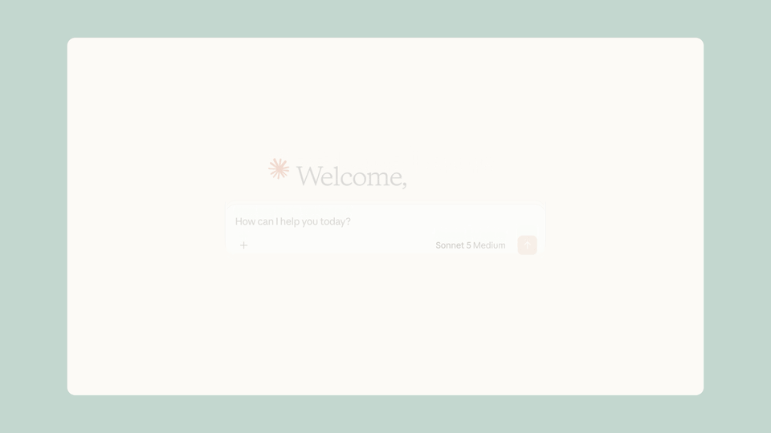
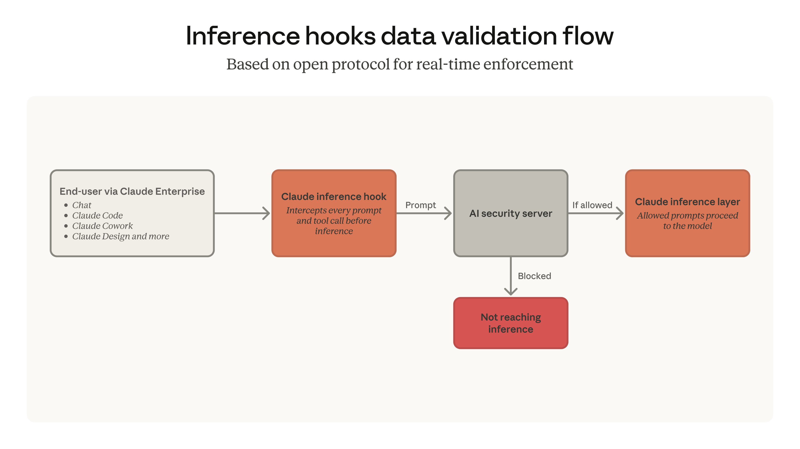

인퍼런스 훅(Inference hooks)을 쓰면 컴플라이언스 팀이 모든 프롬프트와 도구 호출 응답이 Claude에 도달하기 전에 이를 검사하고 정책을 집행할 수 있다. 채팅, Claude Code, Claude Cowork를 비롯한 Claude Enterprise의 모든 표면(surface)에 걸쳐서다. 차단할지 허용할지는 여러분의 DLP 서버가 판단하고, Claude는 그 결정을 실시간으로 집행해 승인되지 않은 콘텐츠가 Claude에 도달하기 전에 막는다.
보안 팀은 임직원이 민감 데이터를 옮길 수 있는 모든 경로가 자기 팀이 통제하는 검사 지점을 반드시 거치도록 요구한다. 오늘 이전까지 네이티브 인라인 집행은 Claude Code의 클라이언트 사이드 훅(client-side hooks)에 한정돼 있었다. 인퍼런스 훅은 제품마다 별도의 통합 작업이나 에이전트를 두지 않고도 모든 Claude Enterprise 표면을 아우르는 단일 집행 계층으로 그 공백을 메운다.

조직이 인퍼런스 훅을 켜면 모든 추론(inference) 요청은 서명된 WebSocket 연결을 통해 보안 서버로 라우팅된다. 모델이 생성을 시작하기 전에 Claude는 프롬프트와 그 주변 컨텍스트를 여러분의 서버로 보낸다. 서버는 허용(allow) 또는 거부(deny)라는 판정을 돌려주고, Claude는 판정을 받은 뒤에야 진행한다. 같은 검사가 도구 호출에도 적용된다. Claude가 도구를 호출할 때 — MCP, 스킬(skills), 플러그인(plugins)을 통해 연결된 도구를 포함해 — 그 도구의 응답은 모델로 되돌아가기 전에 검사된다.
기존 DLP 프로그램을 Claude까지 확장한다. 인퍼런스 훅은 공개된 스키마를 갖춘 개방형 웹훅(webhook) 기반 프로토콜을 사용한다. 덕분에 배포가 쉽다. 다른 도구들이 이미 리포팅하고 있는 바로 그 서버 — Netskope, Palo Alto Networks, Proofpoint, Zscaler, 또는 사내에서 직접 구축한 AI 보안 서버 — 를 가리키게 하기만 하면 된다.
채팅, Claude Code, Cowork를 비롯한 Claude Enterprise 제품들을 설정 하나로 커버한다. 조직 수준에서 인퍼런스 훅을 한 번 켜면 MCP 커넥터, 스킬, 플러그인을 통해 이뤄지는 도구 호출을 포함해 Claude Enterprise 표면 전반에 적용된다.
섀도 모드(shadow mode, 항상 허용), 역할 기반 제외(role-based exclusions), 비율 기반 롤아웃(percentage-based rollouts)으로 도입을 단순화한다. 실패 정책(failure-policy) 허용 범위, 타임아웃을 비롯한 설정을 조직의 위험 감수 수준에 맞게 조정할 수 있다.
인퍼런스 훅은 오늘부터 Claude Enterprise 고객을 대상으로 베타로 제공된다. 문서를 읽고 조직의 DLP 서버를 구성해 Claude Enterprise 표면 전반에 정책 집행을 시작하면 된다.
보안 벤더라면, 인퍼런스 훅은 문서화된 스키마를 갖춘 웹훅 기반 프로토콜 위에 만들어져 있으므로 통합을 직접 구축할 수 있고, Claude Enterprise 고객은 자사 조직이 여러분의 플랫폼을 바라보도록 설정할 수 있다.